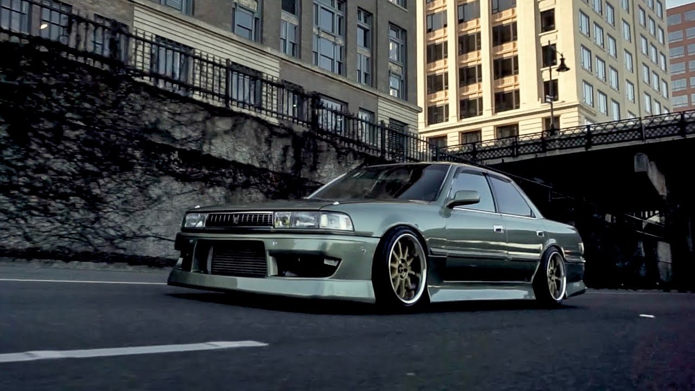
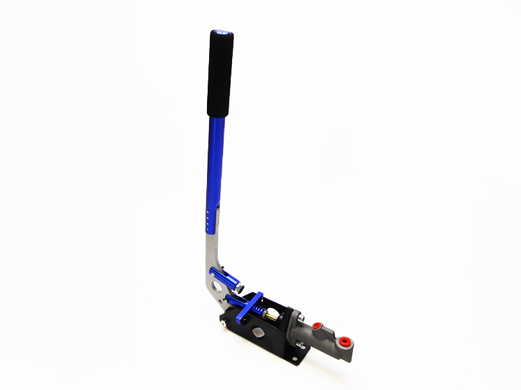
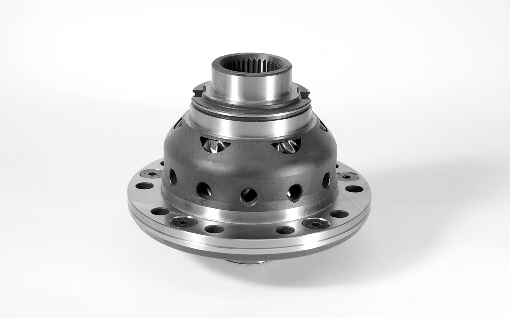
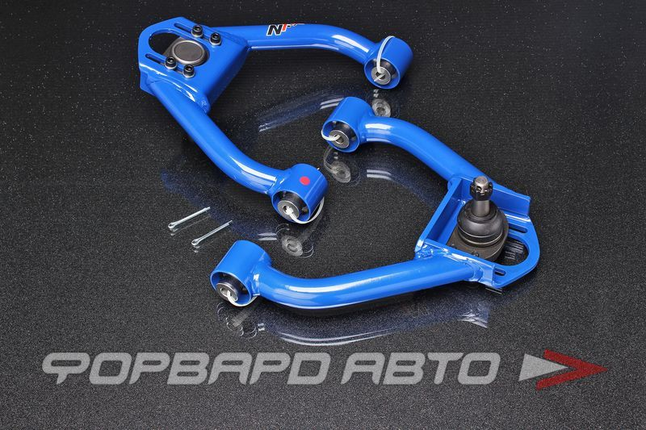
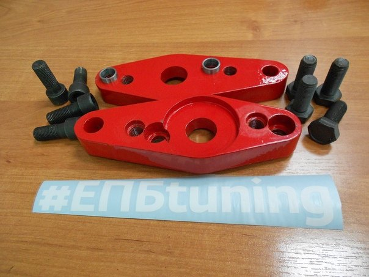

Как и сколько будет стоить "Корч"" для летнего дрифта?
Для начало надо определиться с нашем бюджетом. Минимально нам потребуется 300 тысяч и десятки часов корчивания в гараже
С нашим бюджетом я бы присмотрелся к "маркообразным". На механике можно найти 81 поколение за 150-200 тысяч в нормальном состоянии,

Допустим вы купили стокувую 81 кресту, теперь нужно подготовить её к дрифту.
Да-да-да, первое что нам нужно- это ковш, для того чтобы удержаться за рулём во время перекладок. Покупаем ковш и "салазки" для него. Цена этого спортивного сидения с боковой поддержкой будет около 10-15 тысяч. Далее нам нужно купить гидроручник, его цена около 5 тысяч + запчасти 3 тысячи.

Затем покупаем блокировку дифференциала, её цена около 12-15 тысяч в разных магазинах. Если нету денег на блокировку, тогда делаем заварку.

Так, теперь самое дорогое, переваренные рычаги подвестки. их цена вместе с сошками около 25 тысяч.


Ещё нам нужна резина, для нашего бюджета нам подойдет westlake, их комплект будет стоить 16 тысяч.
Осталось выкинуть все лишнее из салона: задний диван, задние дверные карты, запаску, штатные ковры.
Все наш дрифт корч готов, его бюджет составил: 280 без дисков, с дисками 300 тысяч